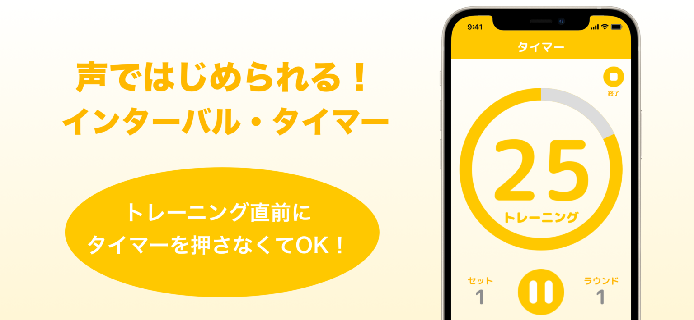
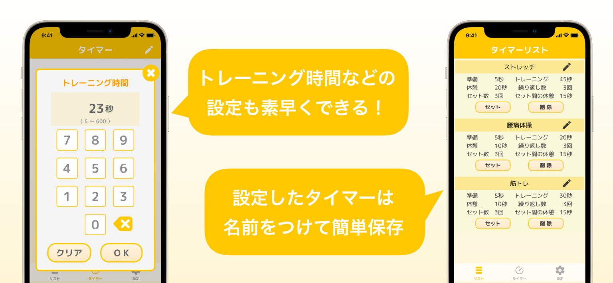

声ではじめる！インターバル・タイマー 〜筋トレ・体操などに〜


「スタート」と呼びかけて始められる、繰り返し設定もできるタイマーアプリです。
スマホやタブレットを少し離れたところに置いてタイマーを開始できますので、エクササイズなどをハンズフリーで始めることができます。
▼特徴
- 音声入力をONにすれば「スタート」と話しかけることでタイマーを開始できます（スタートボタンでも開始できます）
- 準備時間、1セットあたりのトレーニング時間や休憩時間、セット数とセット間の休憩時間をそれぞれ指定できます。
- 設定したタイマー内容に名前をつけて、簡単に保存したり、セットできます。
- トレーニングなどの区切りを声やSEで知らせてくれますので、画面を見ることなくトレーニングを進めることができます。
- 音声ガイドのON／OFFを切り替えることができます。
▼おすすめ活用シーン
- タバタ式トレーニングやワークアウト、体操やエクササイズ、フィットネスなど
- テレワークやリモートワークなど在宅勤務をされている方の自宅での運動不足の解消
- 時間を決めて繰り返し行う勉強
※音声認識機能の無い端末では音声入力は使えません。